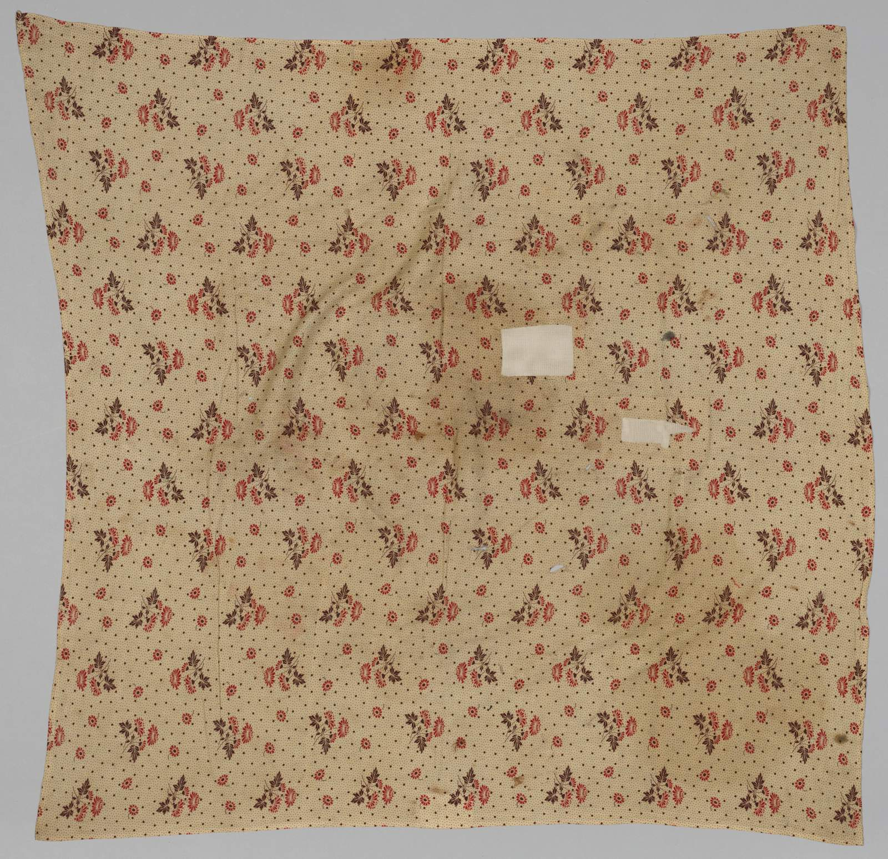

Furoshiki: Choosing Cloth, Thinking of a Gift
Before tying the knot, spread out a cloth. Discover the pleasure of pairing a furoshiki with a gift, through colour, pattern and a little everyday history.
2026.11.09JAPANESE CULTURE JOURNAL
CATEGORY / CULTURE
Antiques, the stories behind objects, and a sense of place. Discover the pleasures of looking a little closer.
1 article

Before tying the knot, spread out a cloth. Discover the pleasure of pairing a furoshiki with a gift, through colour, pattern and a little everyday history.
2026.11.09Brewing, tasting and pausing: stories around a moment of tea.
2 articles02 / FLOWERSSeasonal flowers and the gesture of arranging them.
1 article03 / CERAMICSClay and fire, makers and users: culture through vessels.
18 articles04 / KIMONOWearing cloth, discovering colors, patterns and craft.
1 article05 / FOODStories of place and season behind the table.
2 articles06 / CULTUREAntiques, the stories behind objects, and a sense of place. Discover the pleasures of looking a little closer.
1 article